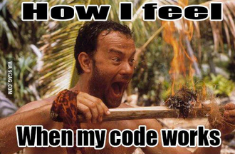

php
I fellow student from O'Reilly School Of Technology asked me about using transactions in SQL to batch together multiple table updates. It turns out this is pretty easy. If you're reading this you probably know why this is a good idea, but I'll briefly explain why just in case you're not sure.
The most important thing when dealing with relational databases is to keep all the data, in all the tables consistent with your database rules. For example, if you have two tables where one depends on data from the other you wouldn't want to insert data into one if there was a problem with inserting data into the other. Below are two very simple tables.
| customerID | first_name | last_name |
|---|---|---|
| 1 | John | Smith |
| 2 | Walter | White |
| orderID | widgetID | customerID |
|---|---|---|
| 1 | 2 | 2 |
| 2 | 1 | 2 |
Lets assume we need to make a script that adds to both of these tables at the same time. Now let's assume something goes wrong while inserting data into the first one, but not the second one. We could end up with something like what you see below:
| customerID | first_name | last_name |
|---|---|---|
| 1 | John | Smith |
| 2 | Walter | White |
| orderID | widgetID | customerID |
|---|---|---|
| 1 | 2 | 2 |
| 2 | 1 | 2 |
| 3 | 1 |
So here we attempted to inserted a new widget_customer and a new widget_order,but for some reason the customer insert query failed! That's why we have a new orderID (3) with a missing customerID. To make sure this never happens mySQL has transactions.
With transactions you can check that everything went right with both inserts before you COMMIT them to the database.
Before you can even use transaction, you need to set your database tables to use a MySQL engine that supports transactions.
You can do this in your mysql command line like this
mysql> alter table widget_customers type=InnoDB;
mysql> alter table widget_orders type=InnoDB;
Now you're ready to take advantage of transactions.
First you set a flag to true and begin the transaction. You use this to check that each SQL command is successful
$success = true; //flag to determine success of transaction
//start transaction
$command = "SET AUTOCOMMIT=0"; // this turn off AUTOCOMMIT
$result = $db->query($command); // in mySQL and lets you insert data without it being perminate
$command = "BEGIN"; // this begins the transaction
$result = $db->query($command);
Then you run your first query
$command = "INSERT into widget_customers (customerID, first_name, last_name) VALUES ('','Jessie','James')";
$result = $db->query($command);
if(!$result){
$success = false;
}
Then your second query
$command = "INSERT into widget_orders (orderID, widgetID, customerID)
VALUES ('', '1', '3')";
$result = $db->query($command);
if(!$result){
$success = false;
}
Now if either of those queries didn't work, $success will be false.
In the last step we either commit our queries to the database or roll them back.
if ($success) {
$command = "COMMIT";
$result = $db->query($command);
echo "A new customer and order has been entered!";
}else {
$command = "ROLLBACK";
$result = $db->query($command);
echo "Sorry, the update failed.";
}
$command = "SET AUTOCOMMIT=1"; //return to autocommit
$result = $db->query($command);
So what's happening here?
First we check our $success flag. If $success is true we run the mySQL command COMMIT. At this point all the data we inserted will be perminate. In other words, you wount be able to undo the changes. (you can delete the data you don't want, but that's not the point) .
If any of our queries failed $success will equal false. We'll then run the ROLLBACK command and all the tables will go back to how they were before the transaction started.
The last command SET AUTOCOMMIT=1 just sets the database back to how it was before the transaction started (with transactions disabled).
So I hope all of that made sense, please let me know if you have any questions or comments. Thanks!